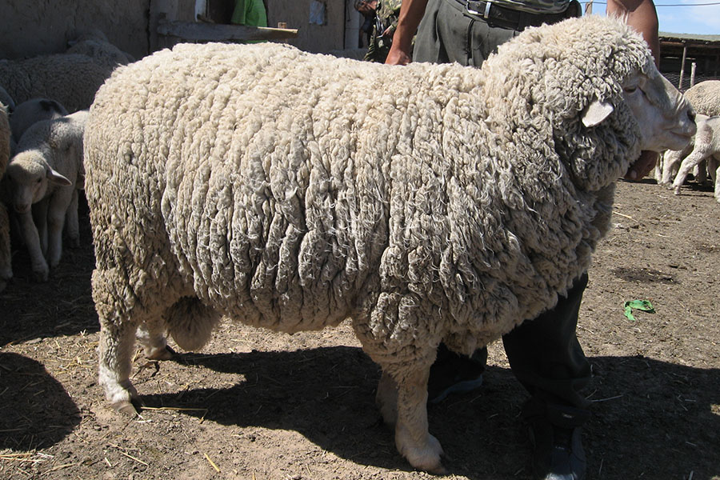
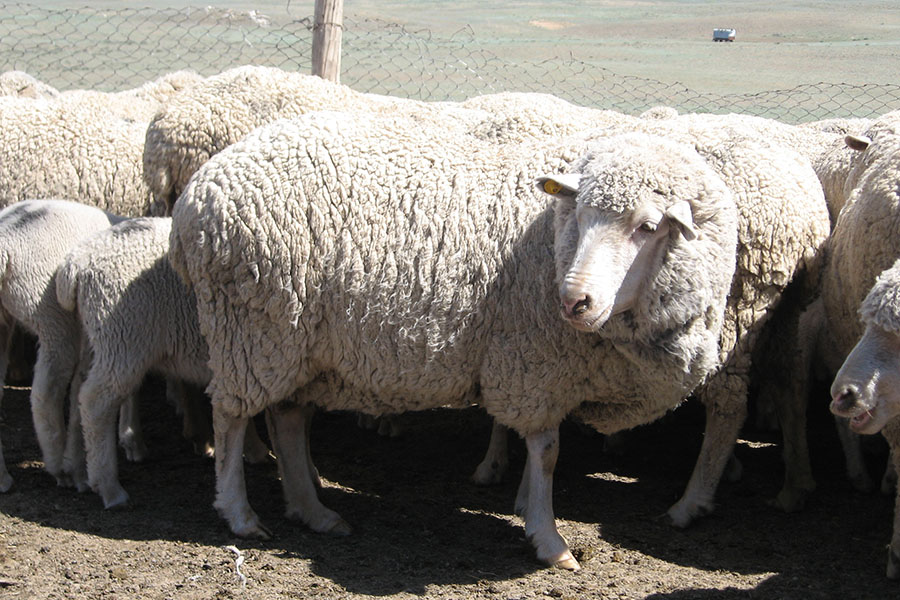

Қой
Дүние жүзінің 170-тен аса елінде 650-дей қой тұқымдары мен тұқымдық топтары бар. Қойдың дене ұзындығы 60 – 110 сантиметр, шоқтығының биіктігі 55 – 100 сантиметр. 12 – 15 жыл тіршілік етеді. 5 – 7 айлығында жетіледі, 15 – 18 айында ғана күйекке жіберіледі. Саулықтарының буаздық мерзімі 145 – 155 тәулікке созылады. Көпшілігі жалқы, кейде егіз туады. Отар – бірге бағып- күтуге арналған қой тобы. Бір отардағы қой саны жасына, жынысына, басқа да ерекшіліктеріне байланысты алты жүз бен мыңның арасында болады. Үлкен фермаларда, шаруашылықтарда қойларды саулық, тұсақ, тоқты, ісек, қошқарлар отарына бөледі. Биязы жүнді және асыл тұқымды қозыларды үш жарым төр айларында, қылшық жүнді үш төрт айлығында бөліп, отар құрады. Еркек және ұрғашы тоқтылардан бөлек отар жасалынады. Жас төлдерден құралған отарларды бөлек жақсы жайылымдарға жаяды, жеммен үстеп қорректендіреді. Отарлар бір- бірімен араластырылмайды, үш төрт адамнан құралған малшылар (шопандар) бағып күтеді. Қозылар 1,5 айлығында отармен бірге бағылады, 3 – 4 айлығында енесінен айырып, еркек және ұрғашы қозыны жеке отарға бөледі. Қ-ды жасына қарай қозы, марқа қозы, тоқты, ісек, тағыда басқа деп атайды; төлдеген қойлар – саулық, 1 жыл төлдемеген қойлар – қысыр, бірнеше жыл төлдемегендерін – ту қой деп атайды.

{kind=link}
Қошқарлар мен саулықтардың орташа тірідей салм. 70 – 140 килограмм; 50 – 70 килограмм тартады. Олардан тиісінше 10 – 15; 4 – 8 килограмм (биязы жүнділерінен) 7 – 10; 3 – 6 килограмм (биязылау жүнділерінен); 4 – 6; 2 – 4 килограмм (ұяң және қылшық жүнділерінен) жүн қырқылады. Қазақстан қой өсірілетін қой тұқымдары: қазақтың етті-биязылау жүнді қойы, қазақтың оңтүстік мериносы, қазақтың арқар-мериносы, қазақтың ұяң жүнді құйрықты қойы, қазақтың биязылау ұзын жүнді қойы, қазақтың биязы жүнді қойы, қазақтың қылшық жүнді құйрықты қойы, ақжайық қойы, ақсеңгір қойы, алтай қойы, еділбай қойы, дегерес қойы, кавказ қойы, цигай қойы, қаракөл қойы; тұқымдық топтары – қарғалы қойы, сараджа қойы. қойдың жаңа типтерін шығару жұмысында линкольн қойы, ромни-марш қойының тұқымдары пайдаланылады.
Үй қойларының ата-тегінің үш түрлі атауы бар. Олар муфлон, арқар (немесе аргал) және жабайы қыр қойлары болып табылады. Олардың ертеде қолға үйретілгендерінен үй қойларының түрлері пайда болған. Жабайы қойдың көз алды мен бақайының аралықтары безді келіп, басы құйқалы, жазық маңдайлы болады. Қошқарлары иір мүйізді, ірі, қылшық түкті, дөңгелек құйрықты, сида, ұзын сирақты. Олардың қысқы қоректері ағаш қабықтары мен көк шырпылар және құрғақ шөптер. Басқа түліктерге қарағанда, қой қолға үйретуге өте қолайлы келген. Жабайы қой тұқымдарын адам баласы көптеген уақыт алып, бағып-қағып қолға үйретті, үй қойы етіп, жерсіндірді, ауа райына көндіктіріп, дағдыландырды, содан қой түлігі атанды. Қолға үйренген үй қойларының да тұқымдары әр түрлі болып келеді. Солардың бірі — қазақы қой. Қазақы қойлар бертін келе тұқымдарына қарай, өскен жеріне, тұқымына, өсімталдығына, түр-түсіне, жүніне, құйрық, бас, құлақ, бітістеріне, жасына, мінез-әдеттеріне, тағы басқадай ерекшеліктеріне байланысты аталған. Мысалы: шаруалар қойды жасына қарай: үлкен (сақа) қошқар, азбан, ісек, дөнен қой, құнан қой, саулық, тұсақ, тоқты, марқа қозы деп атаса, жынысына қарай; еркек қой, ұрғашы қой, (тоқтышақ), еркек тоқты, ұрғашы тоқты, еркек марқа, ұрғашы марқа, еркек қозы, ұрғашы қозы, т. б. деп атайды.
